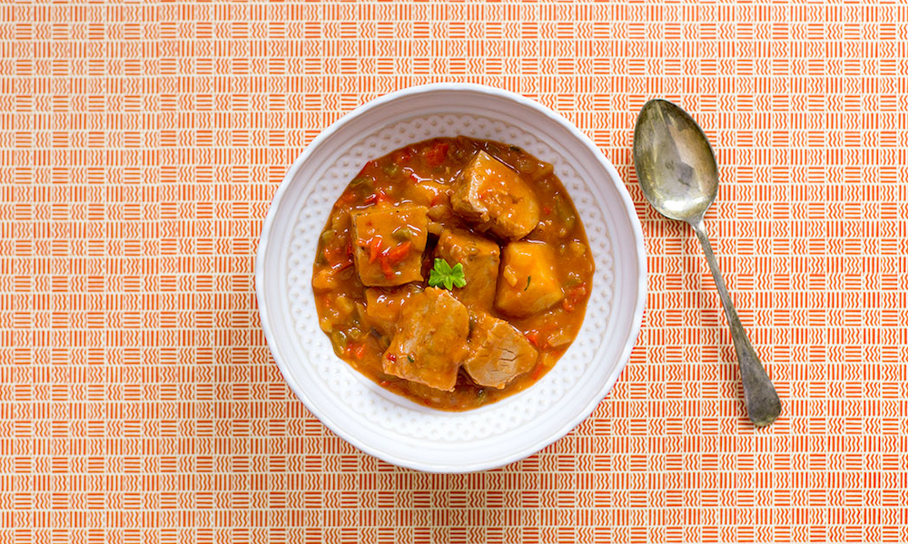

BONITO MARMITAKO (BASQUE TUNA STEW)

- INGREDIENTS LIST
- For the fish stock:
- Tuna bones - cleaned
- 1 Leek
- 2 Carrots
- 1 clove Garlic - peeled
- 1 Spring onion
- 1 small bunch Fresh parsley
- 150 ml White wine
- For the marmitako:
- 500 g Tuna loin - boneless and gutted
- 2 small Green pepper - finely chopped
- 1 small Brown onion - finely chopped
- 5 large Potatoes - broken into large pieces
- 4 Choricero pepper - alternatively you can use ñoras
- 0.5 tsp Cayenne flakes
- 1 tsp Sweet pimenton
- 150 ml White wine
- Extra virgin olive oil
- Fresh parsley - finely chopped
- Salt